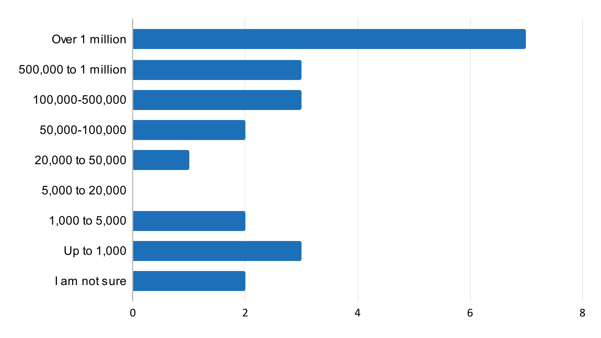
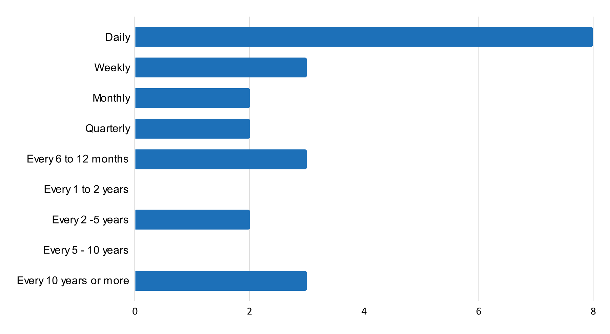
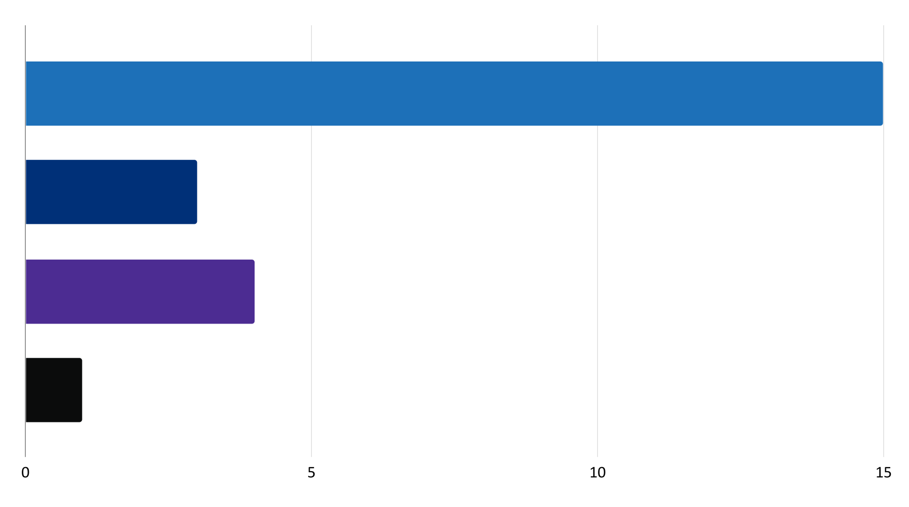
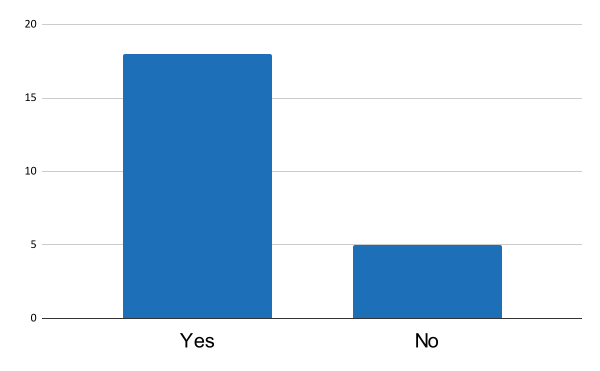
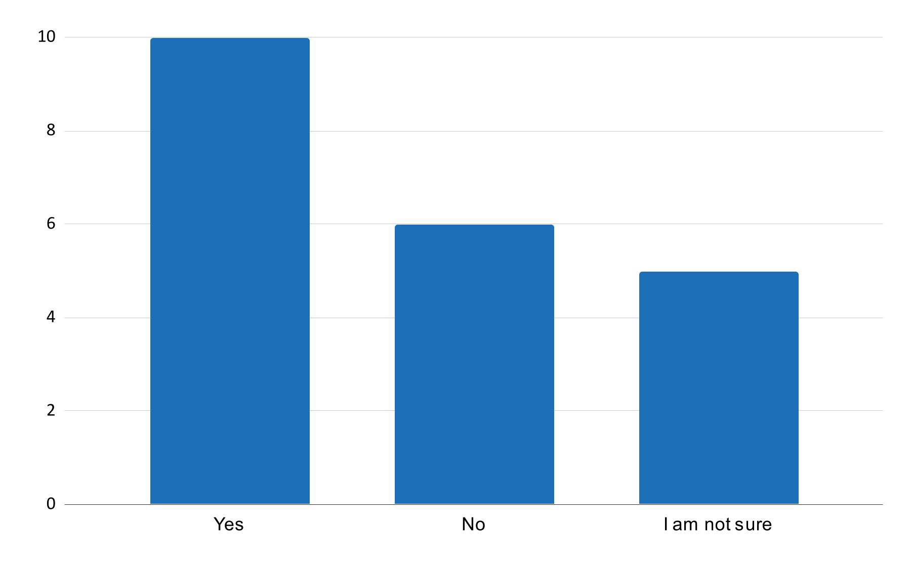
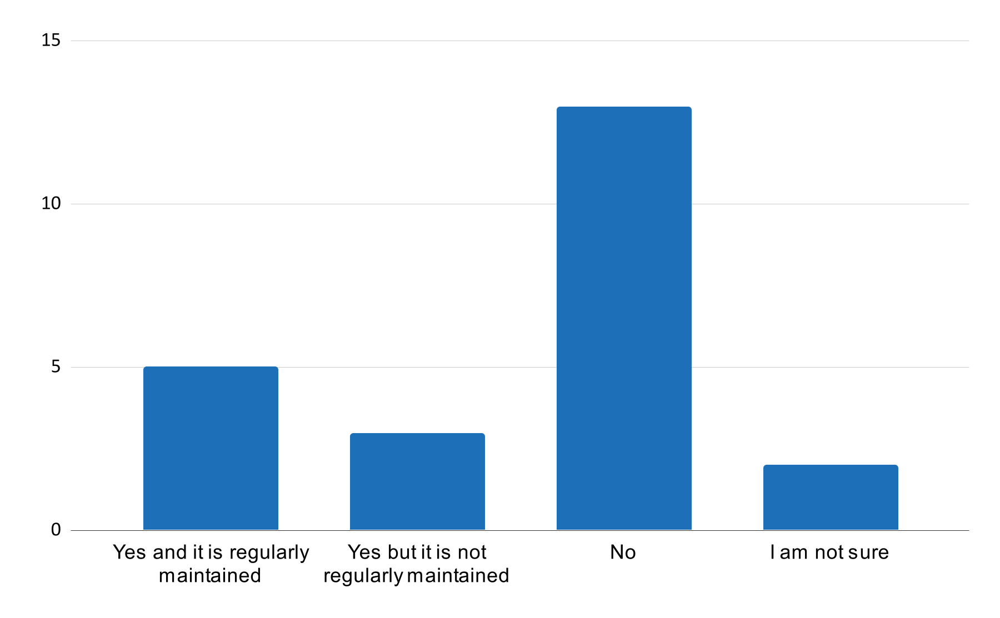

Does your service already acquire data from other government departments, agencies or bodies?

Identify gaps in the technical architecture of services
Our focus was to explore the feasibility of joining up services across government, and their readiness to participate in cross-government data sharing via the GOV.UK account.
We wanted to understand the technical and data capabilities of a diverse range of government services, through quantitative research.
We created a short survey targeted at lead and senior service developers.
The survey captured information about:
Participants were also invited to participate in follow-up research.
Participation in the survey was voluntary, it was shared with the following channels to encourage responses from the target roles:
The survey received 23 responses.
All participants hold a technical role within a user-facing or support service, mainly:
Participants work for 23 different services across a range of government departments and public sector bodies, including:
Over 90% of services have individuals as the end user, with many also supporting people with delegated access (56%) and businesses (48%).
All services surveyed can be accessed online, services are a variety of sizes and usage frequencies, generally they are used daily, and have more than a million users per year:
How many users interact with the service you work with each year?
How often does a typical user interact with your service?
Participants were asked which of the following statements best describes their service:
The service is well architecturally structured, documented, monitored and regularly updated using CI/CD pipelines. It is easy to add in new functionality without compromising the service, and new ways are looked at to continually improve the service
The service is well architecturally structured, documented and monitored. It is relatively easy to add in new functionality without compromising the service, but some alterations to services may come with risk as they interact with legacy systems/processes
The service uses an approved version of the organisation’s standard software process for developing and maintaining software, and regular changes are implemented through a standardised process. Any major changes to this service are still seen as hard, but possible
The service is characterised as ad hoc, and occasionally even chaotic. Few processes are defined, and success depends on individual effort. There is a high risk of a software change - likely this has not been done for years.
The service is largely handled manually.
Which statement best describes your service?
Most participants identified their service as Statement 1. However without a definition of “well structured” their definition may not match our own.
 Statement 1 Statement 2 Statement 3 Statement 4 Statement 5 (not selected)Does your service currently give users a way to sign in online?
The majority of services have an existing sign in capacity
Does your service already acquire data from other government departments, agencies or bodies?
Does your service provide data to other government departments, agencies or bodies?

47% of participants answered yes to the question:
“Many services hold information about the citizens they support (e.g. their address, employment status, NI number). Would having access to this information (with explicit consent from the user) be helpful to your service if it could be shared?”
The data source does affect the level of trust services would have in the data.
“Authentication and authorisation are at the core of what we do. Trust is very, very important and provision of data for onward consumption has to be trustworthy”
“Whilst we'd recognise that different services put varying amounts into their data and person validation, once we identified the level to which each went with their data, we could still make use of it - even anecdotal, non-verified data can be used as a secondary validation point against our own data, for example.”
I believe that my service would have different levels of trust depending on the service that the data has been acquired from

Services believe they have the ability to call external data sources via RESTful web services.
Further questions will need to be asked to understand if they can make data available in the same way.
How easy or difficult is it to make the service consume data from a simple third-party REST API from the “online” service?

There is a recognition of pain points with current setups, and there is a lack of data abstraction when examining services' relationship to data:
Are there any pain points or problems that you encounter with the data that is currently shared with your service team?
Does your service have a data dictionary?
Learnings from the service and data research from X-Gov Services have highlighted that most services are reliant on manual processes to support their online service.
Further exploration is required to establish to what extent this is the case across government services:
The service and data research highlighted that services are using data from 3rd parties, e.g. Ordnance Survey data, 3rd party address lookups and use of Experian data.
Understanding the extent to which this is happening across government services would allow for common gaps in data availability to be identified, as well as providing evidence for a business case with potential cost savings.
Learnings from research have highlighted that services would like greater access to data, including about their users held by other services.
Further exploration is needed to understand for services across government: